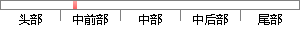

本系统是部署在windows上的java应用，将采用springboot + mysql + angularJs + jpa，以maven框架为库管理框架，在前端页面，结合bootstrap框架实现页面的美化，并实现响应式网页的设计。
片段位置图

相似结果|
1
原句片段：前端页面，结合bootstrap框架实现页面的美化，并实现响应式网页的设计。
相似片段 1：移动智能设备的广泛应用,使得网页的设计要求必须满足移动设备端的完美呈现。该文在研究响应式网页设计的基础上,结合Bootstrap框架,以个人博客页面的响应式设计与实现为...
相似片段 2：响应式网页设计--登陆窗口布局的实现 bootstrap创建登录注册页面 响应式网页设计--登陆窗口布局的实现 bootstrap实现响应式登录页面 用bootstrapt写一个响应式...
相似片段 3：研究 了web 前端开发框架 Bootstrap,分析其在响应式网页设计 中的作用,并以数字媒体技术专业介绍为背景,设计并构 建了基于Bootstrap 框架的响应式网站,实现了移动...
|
※ 片段修改建议 ※
近似词参考：- 部署：摆设 布置
- 应用：利用 运用
- 采用：采取 接纳 采纳
- 管理：办理 经管 治理
- 结合：连系 联合
- 响应：相应
- 设计：计划
系统自动生成语句：本系统是摆设在windows上的java利用，将采取springboot + mysql + angularJs + jpa，以maven框架为库办理框架，在前端页面，连系bootstrap框架实现页面的美化，并实现相应式网页的计划。
注：本片段修改建议为系统自动生成，仅供参考。